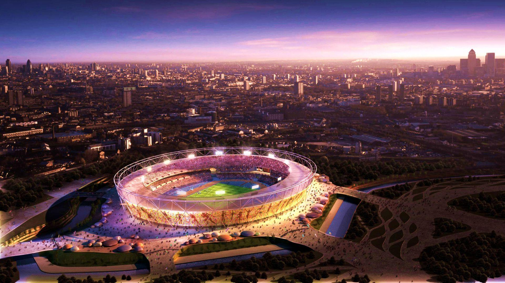
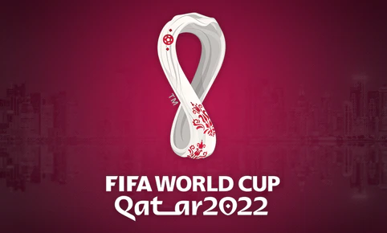
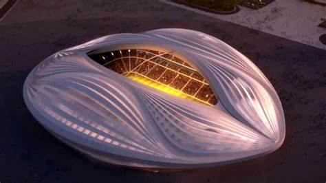
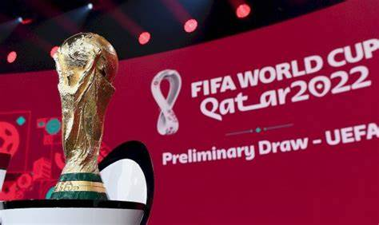
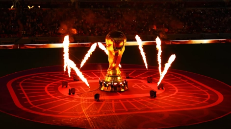
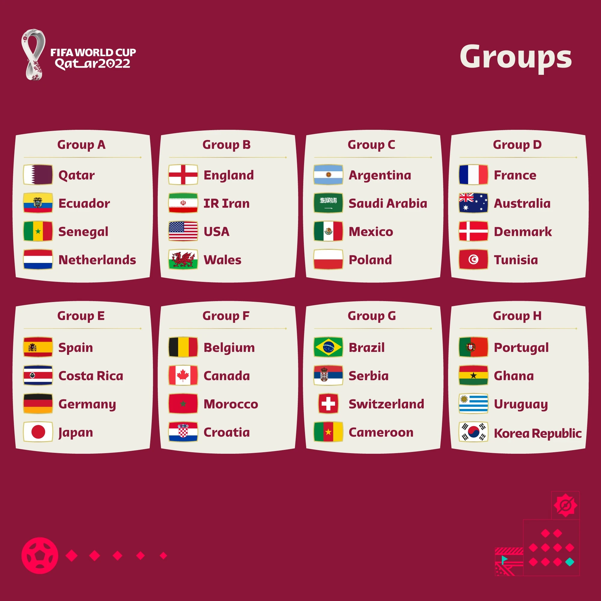

La Coupe du monde de football, ou Coupe du monde de la FIFAc, est le championnat du monde des équipes nationales masculines de football. Décidée le 28 mai 1928 par la Fédération Internationale de Football Association (FIFA) sous l'impulsion de son président Jules Rimet, elle a été ouverte à toutes les équipes des fédérations reconnues par la FIFA, professionnelles y compris, se distinguant en cela du tournoi olympique de football, à l'époque réservé aux amateurs. La Coupe du monde de la FIFA Qatar 2022™ se déroulera du 20 novembre au 18 décembre. 32 équipes s'affronteront à travers 64 matches,Elle se déroulera au Qatar du 20 novembre au 18 décembre 2022, jour de la fête nationale du Qatar et une semaine avant Noël, avec une estimation du marché télévisuel potentiel à 3,2 milliards de téléspectateurs.




